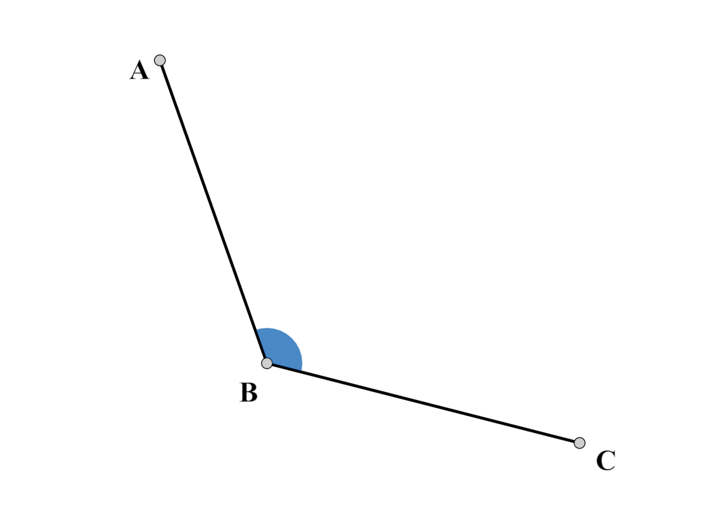
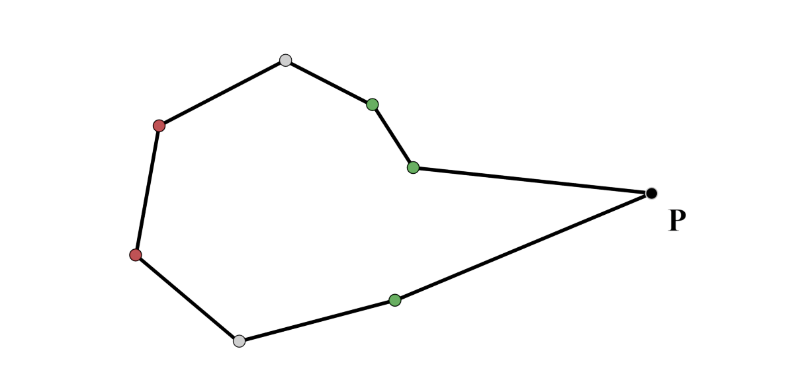
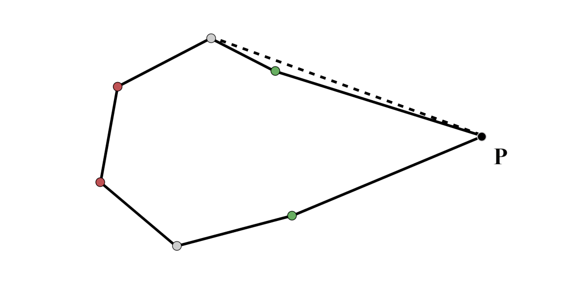
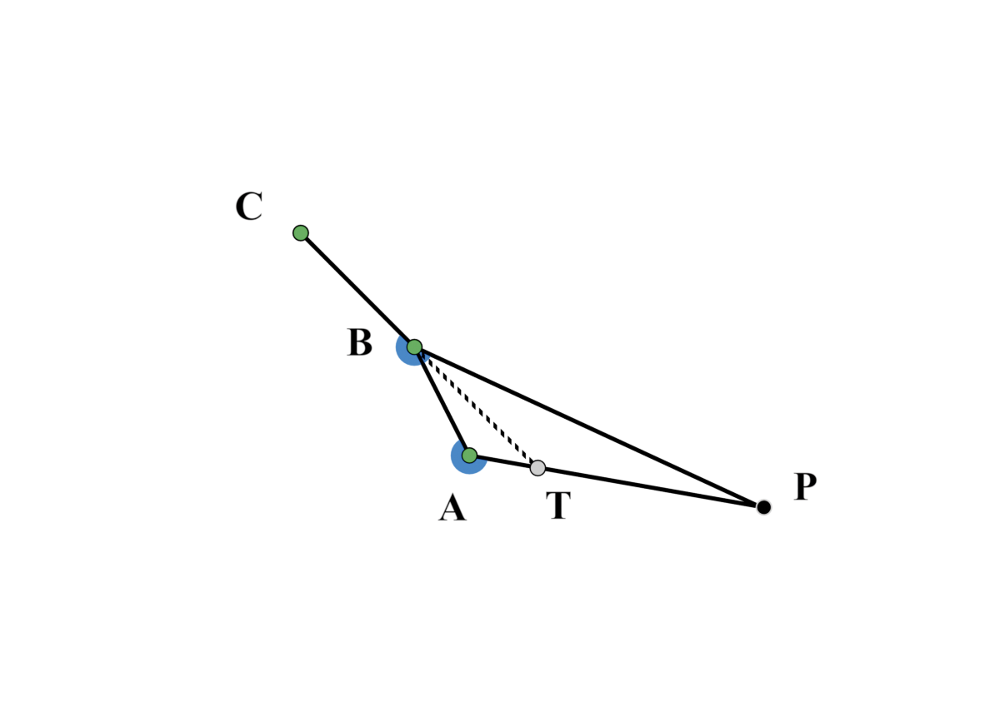
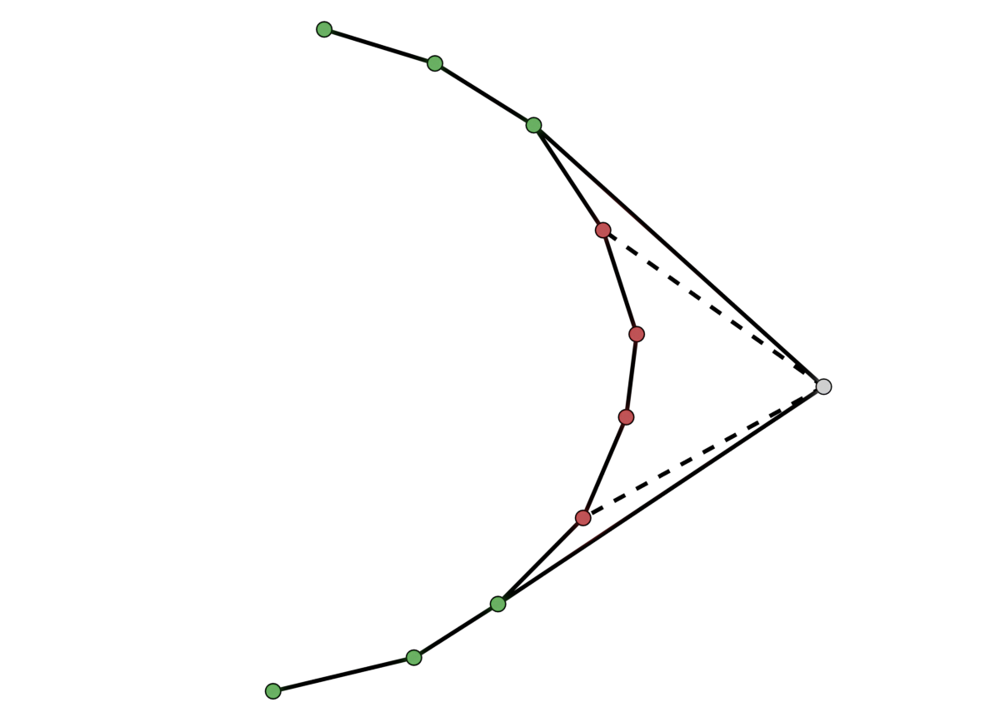

An \(O(n \log n)\) Algorithm to Compute the Convex Hull
In this page, I will present an algorithm for calculating the convex hull of a set of points.
Definition
A convex hull of a (finite) subset of \(\mathit{S \subseteq R}^2\) is a polygon with vertices points of \(S\) such that it contains (both in its interior and on its boundary) all points of \(S\).
The Core Idea
The core idea of the algorithm is to iteratively add new points and slowly build the convex hull. We will have a "temporary" convex hull, which at the beginning is only going to consist of two points, and while traversing the points we will update the "temporary" convex hull is necessary. At the end, this "temporary" convex hull will be the solution the final solution.
We suppose that the points are represented by there cartesian coordinates. We then observe that the points with highest and lowest y-coordinate are necessarily vertices of the convex hull (why?). So the first step of the algorithm is to find these two points. With just these two points, the temporary convex hull is a digon
Some Notation
If \(P \in \mathbb{R}^2\) then we will denote \(P_x, \ P_y\) the x- and y-coordinates of \(P\) respectively. If \(P\) s indexed with index \(i\) then the coordinates are written after the index, .i.e \({P_{i}}_x\).
Angles are written counterclockwise, e.g. the angle \(\measuredangle CBA\) is the following:

The Algorithm
Let \(S\) be a collection of points of \(\mathbb{R}^2\) whose convex hull is to be found. The first step of the algorithm consists of finding the "top" and "bottom" points of \(A\), i.e. the points with the hight / lowest y-coordinate respectively. This is simply achieved by traversing \(A\) once. We will denote the "top" / "bottom" points as \(R\) and \(Q\) respectively.
We store the convex hull in two sorted
The white points are the points \(R\) and \(Q\)
Let's call the left collection \(C_L\) and the right collection \(C_R\). We will also denote the respective polygonal lines that are formed by the points of \(C_L\) and \(C_R\) by the same name (i.e. the polygonal line formed by \(C_L\) is also going to be denoted as \(C_L\)). We also assume at the beginning the temporary convex hull consists only of the points \(R\) and \(Q\) and that both of those points are part of both \(C_L\) and \(C_R\).
We continue to the main loop of the algorithm. This main loop consists of three parts, we traverse \(A\) and for each point \(P \in A\) and:
- We check if the point is outside of the temporary convex hull;
- if so, we inserted in the appropriate collection (either \(C_L\) or \(C_R\));
- we erase any points of the two collections that should not be part of the convex hull anymore.
Checking if a new point is outside of the temporary convex hull
In the following figure the coloured points (white, red, green) are the points of the temporary convex hull. The black point \(P\) represents the "new" point, i.e. the point that we are currently traversing.
We will perform the check on both sides of the polygon (i.e. \(C_L\) and \(C_R\)) separately. Let's concern ourself with the right side. The left side will work in a similar way. What we essentially want to do is to check whether the new point is on the "right" side of \(C_R\). To do this, we will draw a line \(\varepsilon\) parallel to the x-axis that goes through \(P\). Then we compute it's intersection with the polygonal line that is formed by the points in \(C_R\) and check whether the intersection has an x-coordinate that is larger or smaller than \(P\). Keep in mind that since \(C_R\) and \(C_L\) is convex form a convex polygon, the intersection of the parallel line with the polygonal line of \(C_R\) is unique.
But how do we compute the intersection of \(\varepsilon\) with \(C_R\)? One naive way is to compute the intersection of all line segments of \(C_R\). This works... but there is na significantly more efficient way. See, we don't need to check for line intersection between \(\varepsilon\) and every line segment of \(C_R\). Rather, we ca just compute the intersection of \(\varepsilon\) with the line segment that is formed by points that are on either side of \(\varepsilon\) (shown in cyan
Once we find the line segment we can compute the intersection point with \(\varepsilon\) and compare its x-coordinate with \(P_x\) to determine if \(P\) lies outside the "temporary" convex hull.
A small note for optimization: For a given point \(R\) we don't need to perform the above procedure for both \(C_R\) and \(C_L\). Of course, only one is enough, since \(R\) can not be both rightwards of \(C_R\) and leftwards of \(C_L\). To decide the side we are going to check, we can compute the side of the line \(RQ\) that \(P\) lies (with the same algorithm that we also check if \(P\) is outside \(C_R\) and \(C_L\)) and if \(P\) is on the left side of \(RQ\) then we check \(P\) against \(C_L\), otherwise we check against \(C_R\).
Inserting \(P\) and update the temporary convex hull
If we find that \(P\) is indeed outside we temporary convex hull we need to insert it and then update the polygon the remain convex. The insert part is straight forward. Since \(C_R\) and \(C_L\) are ordered by the y-coordinate, we just need to find the appropriate location of \(P\). This is achieved by a binary search, which we have already done in the previous step. The only thing that remains is the tricker
If we insert \(P\) into \(C_R\) we will get the following:
In this case the resulting polygon is not convex. We need to erase one point, specifically the one to the left and up of \(P\) to make the polygon convex:
But that wasn't enough. There are cases, such as this one, where we would need to delete more than one point to ensure that the temporary convex hull stays convex. The naive way of tackling this is to repeatedly erase any point whose interior angle is larger than \(180^\circ\), until there are not more points to erase. This is obviously slow and inefficient. To improve the erasing process, observe the following Lemma:
LemmaLet \(A, B, C\) be two consecutive points of \(C_R\) or \(C_L\) such that \(C_y \leq B_y \leq A_y \leq P_y\) or \(C_y \geq B_y \geq A_y \geq P_y\), where\(P\) is a point outside \(C_R\) / \(C_L\) respectively. Then \(\measuredangle{CBP} \leq \measuredangle{BAP}\), where \(\measuredangle{CBP}\) and \(\measuredangle{BAP}\) are the interior angles.
proof

The above figure is an example of the second case, i.e. \(C_y \geq B_y \geq A_y \geq P_y\) (given that the y-coordinate increase upwards), where the points \(A, B, C\) are from \(C_R\). For the remaining three cases the lemma will be true by symmetry.
Since \(C_y \geq B_y \geq A_y \geq P_y\) and \(C_R\) is the right side of the temporary convex hull, it must be convex and \(C_x \leq B_x \leq A_x\). Also, \(P\) outside of the temporary convex hull, so \(A_x \leq P_x\).
We extend the line segment \(\overline{BC}\) and takes its intersection \(T\) with \(\overline{AP}\). Now, from the order of coordinates that was stated above, \(|BP| \geq |TP|\) which means that \(\measuredangle PTB \leq \measuredangle PBC\). But \(\measuredangle PAB \leq \measuredangle PTB\). Thus, \(\measuredangle PAB \leq \measuredangle PBC\) and taking there supplement angles we arrive at the statement we are proving: \(\measuredangle CBP \leq \measuredangle BAP\).
This Lemma is the core of the optimization of the erasing part. If we have three consecutive points \(A, B, C\) of the convex hull that are, say, both in \(C_R\) and above \(P\) with \(P_y \leq A_y \leq B_y \leq C_y\), then if we delete \(A\), it is essentially the same as drawing the line segment \(\overline{PB}\) and discarding \(A\). Now, whether we need to erase \(B\) too comes down to whether the angle \(\measuredangle CBP\) is smaller or larger than \(180^\circ\). But, from the Lemma we have shown that the interior angles the line segments of \(C_R\) and \(C_L\) with respect to \(P\) are ordered, with the exact same order as the points of \(C_R\) / \(C_L\) respectively. So, all we need is to find the "first" point of \(C_R\) whose interior angle with respect to \(P\) is larger than \(180^\circ\). Then the following points up to \(P\) will have angles larger than \(180^\circ\), by the Lemma, and so those also need to be erased. Of course this need to be done for both "parts" of \(C_R\) and \(C_L\), i.e. both for the points that are above \(P\) and below \(P\), since the interior angles there are "flipped".
Finding this "first" can be done with a simple binary search on \(C_R\) / \(C_L\), since, as discussed above, the interior angle with respect to \(P\) are ordered in \(C_R\) / \(C_L\) respectively.
An illustration of this is the following figure:

The red points are the ones that get erased, whereas the green points remain. The "first" points are the ones that are connected with a dashed lines to the new point.
Time complexity
The first steps of the algorithm (before the main loop) take \(O(n)\) time. Now, for a point in the set of given points, we need to check whether it is outside the temporary convex hull or not. This is achieved by a simple binary search, which (on average) takes \(O(\log k)\), where \(k\) the size of the temporary convex hull. Now the erasing part. First we find the "first" points to erase. This is again achieved with a binary search which takes \(O(\log k)\) time and then we erase the necessary points. Now, if we use a vector to store the temporary convex hull, we would need \(O(k)\) to erase the points. Keep in mind that the points that we need to erase are in order, i.e. we need to erase a segment of the vector, which in a vector is done in linear time independently of the size of the segment we wish to erase. This would make our algorithm have a worst case time complexity of \(O(nk)\). Now, can we do better? Yes. But we need to use a tree-like structure to store the temporary convex hull. This allows us to drop the erasing time to \(O(\log k)\), which makes the worst time complexity of the algorithm be \(O(n \log k)\). But \(k \leq n\) and so the worst case time complexity is \(O(n\log n)\).
A more accurate time complexity analysis would look at the asymptotic behavior of the expected value of \(k\) with respect to \(n\). The problem is that the expected value of \(k\) depends on the distribution of the points, given of course that they are even randomly distributed. Making that assumption, we have the following two results:
- Thanks to Rényi and Sulanke [1] we know that \(k = O(m \log n)\), when the points are chosen with uniform distribution from a convex polygon with \(m\) vertices.
- Thanks to Raynaud [2] we know that \(k = O(n^{1/3})\), when the points are chosen with a uniform distribution from a disc.
Sariel Har-Peled presented simpler proofs of both above mentioned results (and more) in his paper (2011) [3].
Benchmarks
I will discuss the way to tackle the problem using binary trees instead of vectors another time, once I write a page on range deletion in binary search trees (this is the main functionality that we need). For now, I have implemented the algorithm in C++ using the naive vector data structure. The points are randomly distributed on a disc (the distribution is uniform). The resulting time the algorithm needed is shown in the table below:
| # Points | Time | Samples |
|---|---|---|
| 1 000 | 0.33 μs | 100 |
| 10 000 | 5.2 μs | 100 |
| 100 000 | 69.3 μs | 100 |
| 1 000 000 | 0.88 ms | 100 |
| 10 000 000 | 6.5 ms | 100 |
100 000 000 |
*86.77 ms |
10 |
300 000 000 |
*268.716 ms |
10 |
*The last two result are off due to limitation of my computer. My system does not have a lot of RAM, so it resorted to using memory from by disc. This is why we observe a sudden jump in the computing time.
References
- [1] Rényi, A., Sulanke, R. über die konvexe Hülle von n zufällig gewählten Punkten. Z. Wahrscheinlichkeitstheorie verw Gebiete 2, 75–84 (1963). https://doi.org/10.1007/BF00535300
- [2] Raynaud, H. “Sur L’Enveloppe Convexe Des Nuages De Points Aleatoires Dans Rn. I.” Journal of Applied Probability 7, no. 1 (1970): 35–48. https://doi.org/10.2307/3212146.
- [3] Sariel Har-Peled, On the Expected Complexity of Random Convex Hulls*, (2011). https://doi.org/10.48550/arXiv.1111.5340